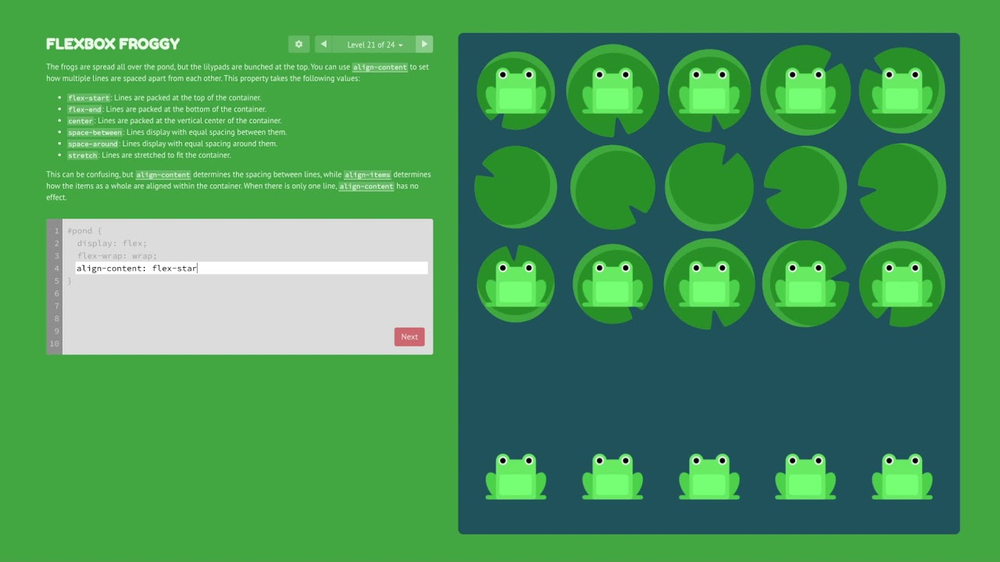
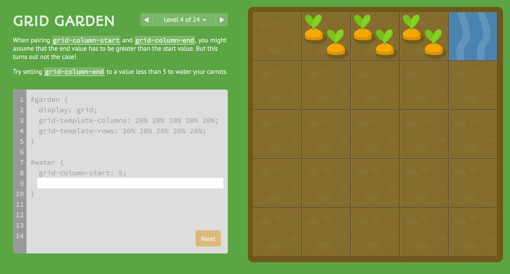
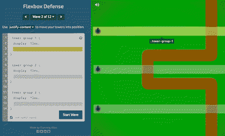

Minigames CSS
Minigames voltados para praticar a linguagem CSS por meio de jogos simples
disponiveis na web gratuitamente

Interativos

Disponiveis na Web

Gratuitos
Minigames voltados para praticar a linguagem CSS por meio de jogos simples
disponiveis na web gratuitamente
Interativos
Disponiveis na Web
Gratuitos
O Flexbox Froggy é um jogo online voltado para o aprendizado de CSS, utilizando uma proposta interativa para ensinar como funciona o sistema de Flexbox. Durante o jogo, o usuário precisa utilizar propriedades do CSS para organizar elementos na página e ajudar os personagens do jogo a chegarem aos locais indicados.
O jogo apresenta diferentes desafios em que os sapos aparecem em uma área organizada em linhas e colunas. Para completar cada fase, o jogador deve escrever comandos CSS utilizando propriedades do Flexbox, como justify-content, align-items, flex-direction e flex-wrap. Conforme os desafios avançam, novas propriedades e situações de posicionamento são apresentadas.
O jogo web serve de ótima forma para treinar CSS de uma forma mais engajada, propondo desafios mais dificeis para os jogadores com as fases e os forçando a entender a linguagem.

O CSS Grid Garden é um jogo online criado para ensinar conceitos relacionados ao CSS Grid, um sistema utilizado para organizar elementos em linhas e colunas dentro de uma página web. No jogo, o usuário precisa utilizar comandos CSS para organizar um jardim e fazer com que as plantas recebam a quantidade adequada de água.
Dentro do jogo o usuário deve organizar o Grid de uma fazenda utilizando comandos de Grid CSS e tornando a configuração mais complexa e elaborada com passar do tempo. Assim sendo incentivado a evoluir nos comandos.
O CSS Grid Garden transforma o aprendizado de layout e posicionamento em CSS em uma atividade prática e interativa. Como o resultado dos comandos aparece diretamente no jardim, o usuário consegue visualizar as consequências de cada alteração no código, facilitando a compreensão de como linhas, colunas e áreas podem ser utilizadas para construir layouts de páginas web.

O Flexbox Defense é um jogo online que utiliza conceitos de CSS Flexbox para ensinar posicionamento e organização de elementos de uma página web. O jogo apresenta uma situação inspirada em jogos de defesa, na qual o jogador precisa posicionar torres corretamente para impedir que os inimigos avancem pelo caminho.
Para completar as fases, o usuário precisa escrever propriedades CSS relacionadas ao Flexbox, utilizando os comandos para controlar a posição e o alinhamento das torres. Entre os conceitos trabalhados estão propriedades como justify-content, align-items e flex-direction. Cada fase apresenta um novo desafio de organização, fazendo com que o jogador precise observar o espaço disponível e ajustar o código para alcançar o posicionamento desejado.

Os três jogos utilizam uma abordagem interativa e prática para ensinar conceitos de CSS. Em vez de apenas apresentar explicações teóricas, eles permitem que o usuário escreva comandos e observe diretamente os resultados dentro do próprio jogo, facilitando a compreensão dos conteúdos.
As atividades são baseadas na utilização de propriedades CSS para solucionar situações apresentadas nos jogos. Os usuários podem praticar conceitos relacionados ao posicionamento, alinhamento e organização de elementos, desenvolvendo uma compreensão mais prática sobre a criação de layouts para páginas web.
Os jogos apresentam uma sequência de desafios com diferentes níveis de complexidade. Conforme o usuário avança, novas propriedades e situações são apresentadas, permitindo que os conceitos sejam praticados gradualmente e que o estudante desenvolva suas habilidades ao longo das atividades.

Flexbox Froggy, CSS Grid Garden e Flexbox Defense podem ser utilizados para aprender conceitos fundamentais de CSS e desenvolvimento de páginas web. Por meio dos desafios, o estudante pode compreender como diferentes propriedades do CSS modificam a posição, o alinhamento e a organização dos elementos presentes em uma página.
Os jogos são especialmente úteis para aprender conceitos relacionados a Flexbox e CSS Grid, dois recursos importantes para a criação de layouts. Durante as atividades, o estudante pode praticar propriedades relacionadas ao alinhamento, direção, distribuição e posicionamento de elementos, observando visualmente o resultado de cada comando utilizado.
Outro conhecimento desenvolvido por essas ferramentas é a capacidade de interpretar problemas e encontrar soluções utilizando código. Para avançar nas fases, o usuário precisa compreender o objetivo apresentado, identificar quais propriedades CSS podem ser utilizadas e testar diferentes possibilidades até encontrar uma solução adequada. Esse processo contribui para o desenvolvimento do raciocínio lógico e da autonomia na programação.
Os três jogos também podem ser utilizados como recursos complementares em aulas de desenvolvimento web. Professores podem utilizá-los para apresentar novos conceitos, propor atividades práticas ou permitir que os estudantes revisem conteúdos de maneira mais interativa. Por serem baseados em desafios curtos e visuais, eles podem facilitar a compreensão de conceitos que inicialmente podem parecer abstratos.